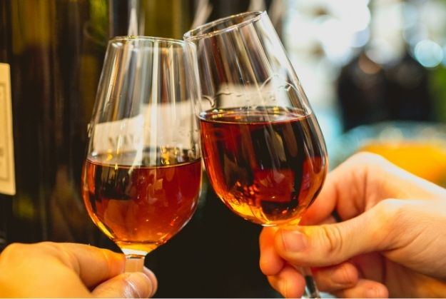
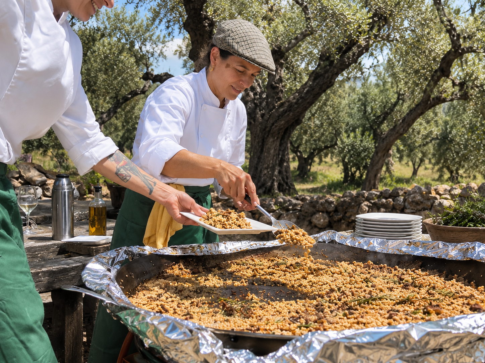

Tailor Made · Spanish traditions
Spanish tradition experiences
Easter, the Feria, the romerías — from the inside.

Traditions
Andalucia, where the tradition has a strong influence and forms an important part in daily life. Easter holiday, the Spring Fair and local fiests and Romerias make the Andalucian feel alive and connect them to their roots.
The proudness they show in each and every celebration is huge and they willingly share their joy and devotion with tourists that want to participate.
Many other costumes really make the difference like gastronomic roots that still are present in the local cuisine and of course planting and harvest festivals, wine festivals, pilgrimages all demonstrate the finest local crafts, gastronomy, music and religious beliefs.




Easter
Seville together with Malaga are the capitals of the most outstanding and emotional fiesta in Andalucia, The Seven days of Easter week.
The churches bring out in the street their processions with warm light of candles, the colour of the Nazarenes’ tunics and the music of bands with drums and trumpets represent religious devotion in honour to the death of Jesus Christ.
The brotherhood parade’s members are dressed in their peculiar costumes walking through the streets filled with incense and orange blossom aroma carrying religious figures (pasos) to the sound of the characteristic music of drums and cornets – an amazing sight.


“Some traditions you watch. Others you are invited into.”
Spring Fair
Seville is showing its best and most spectacular side during the April fair. The joyful spirit, the lively music, the beautiful horses and the colorful flamenco dresses are all essences of this magical city.
During 1 week in April the Sevillians move all their attention to the Real de la Feria, the location where the characteristic green, white and red striped tents are home for a few days and for almost every Sevillian.
The party starts midday with horse carriage parades and continues into learly hours to the rhythm of Sevillanas. (Seville flamenco songs) People eventually begin to head off in search of churros with chocolate, before resting for a couple of hours to continue the next day.


“We travel, initially, to lose ourselves; and we travel, next to find ourselves”

Bulls & Horses
In Andalucia, where the bull is a symbol of elegance, strength, mystery, beauty and power, the traditional bullfight has a strong fundamental importance. The bullfight spectacle is basically related to local fiesta and celebrations and invites the spectator to contemplate the demonstration of an art that has been practiced from the ancient days.
The horse has alway been strongly related to the bullfight in Andalucia, but has also a long and fascinating historia in the Andalucian territory.
Jerez de la Frontera, is the center in Andalucia where you find the Royal school of Equestrian art, a place to enjoy the beauty of The “Pure Spanish Breed” that has for ages been considered as one of the noblest, most beautiful horses in the world.


Flamenco & Romerias
The rhythm of flamenco music has a strong association with Spain and specially with Andalucia in the south of Spain. In 2010 the UNESCO World Heritage declared flamenco on the list of Culture Heritage of Humanity.
The Flamenco dance, an authentic expression of Andalusian folklore representing passion, color, power and strength and are often seen in Tablaos (flamenco performance) and typical flamenco bars where spontaneous flamenco is danced among friends. Another long living tradition in Andalucia is its pilgrimages or “romerías”.
A worship or a visit to a chapel or sanctuary of the local Madonna in the shrine normally in the countryside a few kilometers away from the nucleus of the Town. A spiritual and religious tradition.


You can trust us
What they say about us
We had a wonderful Catalunya trip, the accommodation was stunning and the guide Eva very friendly, knowledgeable and informative. We highly recommend the tour.
The round tour in Andalucia was amazing. Incredible sceneries and monuments. Gunvor, our guide was helpful and kind and she told us a lot about Andalucia. I totally recommend this tour.
Flavors of Andalucia and Gunvor, did a really good job organizing my 50 year birthday celebration with my family. We had a nice Country house on the Costa del Sol housing all the family with nice well organized tours and lovely restaurants dinners.
Tailor made
Travel with the calendar
Semana Santa, the April fair, the romerías — tell us when you can travel and we will build the trip around it.